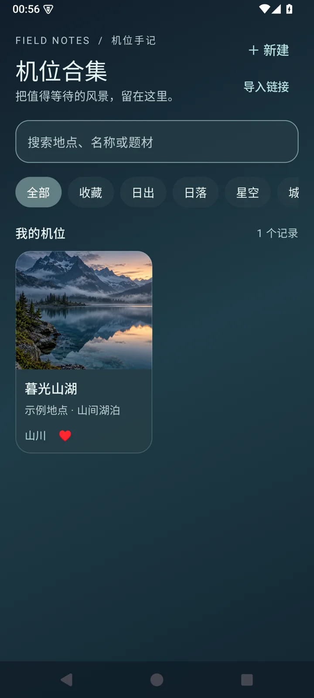
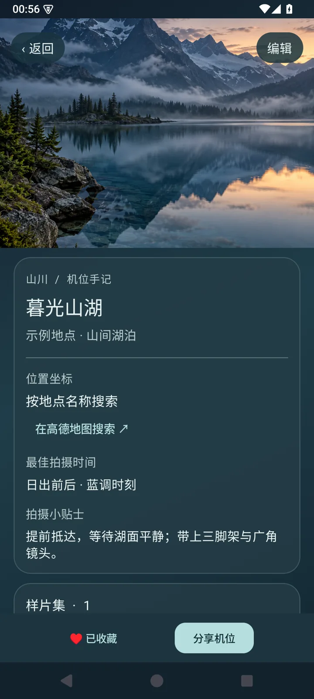
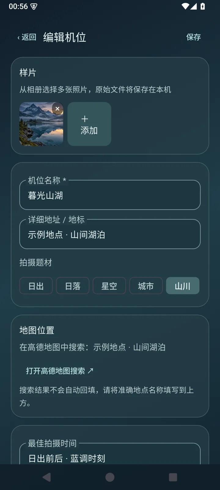

收藏机位
记录地点、拍摄题材和最佳时间，按关键词与分类快速找回。
一份写给风景的手记
Vistake 机位合集，帮你收好每一处值得再去的地方。照片、拍摄时间与那些现场的灵感，都有了归处。
ANDROID 8.0+ · V1.0.0

收集 / 回看 / 分享
好机位不止是一个地点。光线出现的时间、现场的小发现，都值得留在同一本手记里。
记录地点、拍摄题材和最佳时间，按关键词与分类快速找回。
从手机导入多张照片，让画面和拍摄时的心得放在一起。
发送机位文字链接，另一位用户可以预览并导入。链接暂不包含照片。


FROM HERE TO THERE
填写地点与拍摄时间，加入样片，再写下一句现场的提示。下一次想去时，所有细节都在这里。
记录收下地点与拍摄灵感
回看浏览样片、筛选与收藏
分享通过文字链接交换机位
使用说明
Vistake 1.0 专注本地机位管理，以下是当前版本的实际能力。
机位和照片保存在设备的应用私有空间。当前没有云同步或备份导出，卸载应用会删除这些数据。
填写地点名称后，可以打开已安装的高德地图搜索。当前尚不支持地图选点自动回填。
目前链接仅包含机位文字和已有坐标，不包含照片。接收方需要安装 Vistake 并导入链接。
可通过本网站下载 Android 安装包，适用于 Android 8.0 及以上。若此前安装过调试版，因签名不同不能直接覆盖安装；卸载调试版会删除本地数据，请先确认数据是否需要保留。
VISTAKE · 机位合集